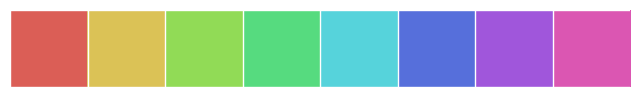
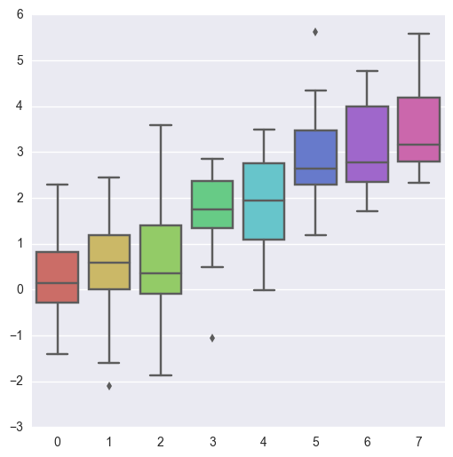
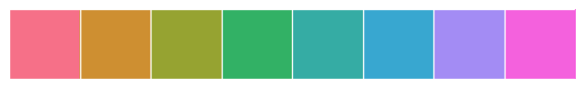
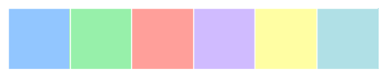
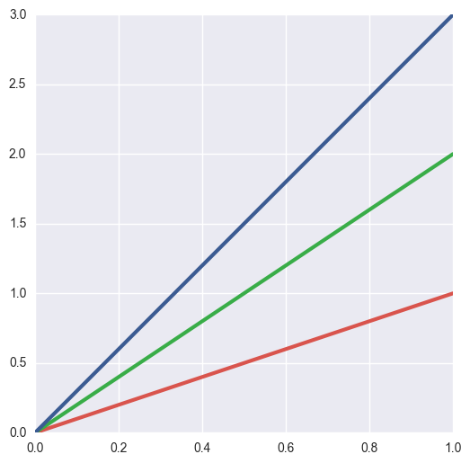
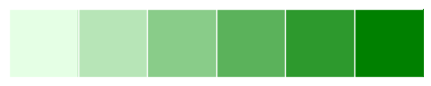
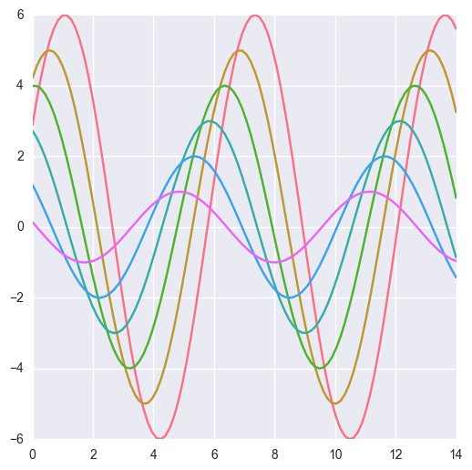

Seaborn使用(2)：Choosing color palettes
调色板
颜色很重要，如果使用的好，就会帮助你突出数据的特征。
- color_palette()能传入任何Matplotlib所支持的颜色
- color_palette()不写参数则默认颜色
- set_palette()设置所有图的颜色
下面是使用seaborn的color palettes的一些例子，这些例子官网上面都已经有详细的介绍。
网址为：http://seaborn.pydata.org/tutorial/color_palettes.html#palette-tutorial
%matplotlib inline
import numpy as np
import seaborn as sns
import matplotlib.pyplot as plt
sns.set(rc={"figure.figsize": (6, 6)})
np.random.seed(sum(map(ord, "palettes")))
current_palette = sns.color_palette()
sns.palplot(current_palette)

sns.palplot(sns.color_palette("hls", 8))

data = np.random.normal(size=(20, 8)) + np.arange(8) / 2
sns.boxplot(data=data, palette=sns.color_palette("hls", 8))
<matplotlib.axes._subplots.AxesSubplot at 0xb1a9b70>

sns.palplot(sns.husl_palette(8))

# l- lightness
# s- saturation
sns.palplot(sns.hls_palette(8, l=.3, s=.8))
sns.palplot(sns.color_palette("Paired", 10))
sns.palplot(sns.color_palette("Set2", 10))
sns.palplot(sns.color_palette("deep"))
sns.palplot(sns.color_palette("muted"))
sns.palplot(sns.color_palette("pastel"))
sns.palplot(sns.color_palette("bright"))
sns.palplot(sns.color_palette("dark"))
sns.palplot(sns.color_palette("colorblind"))
# print(help(sns.color_palette))
Help on function palplot in module seaborn.miscplot:
palplot(pal, size=1)
Plot the values in a color palette as a horizontal array.
Parameters
----------
pal : sequence of matplotlib colors
colors, i.e. as returned by seaborn.color_palette()
size :
scaling factor for size of plot
None

flatui = ["#9b59b6", "#3498db", "#95a5a6", "#e74c3c", "#34495e", "#2ecc71"]
sns.palplot(sns.color_palette(flatui))
plt.plot([0, 1], [0, 1], sns.xkcd_rgb["pale red"], lw=3)
plt.plot([0, 1], [0, 2], sns.xkcd_rgb["medium green"], lw=3)
plt.plot([0, 1], [0, 3], sns.xkcd_rgb["denim blue"], lw=3);

colors = ["windows blue", "amber", "greyish", "faded green", "dusty purple"]
sns.palplot(sns.xkcd_palette(colors))
sns.palplot(sns.color_palette("Blues"))
sns.palplot(sns.color_palette("BuGn_r"))
x, y = np.random.multivariate_normal([0, 0], [[1, -.5], [-.5, 1]], size=300).T
cmap = sns.cubehelix_palette(light=1, as_cmap=True)
sns.kdeplot(x, y, cmap=cmap, shade=True);

sns.choose_cubehelix_palette()

sns.palplot(sns.light_palette("green"))

sns.palplot(sns.dark_palette("purple"))
sns.palplot(sns.color_palette("RdBu_r", 7))
sns.palplot(sns.diverging_palette(220, 20, n=7))
def sinplot(flip=1):
x = np.linspace(0, 14, 100)
for i in range(1, 7):
plt.plot(x, np.sin(x + i * .5) * (7 - i) * flip)
sns.set_palette("husl")
sinplot()
